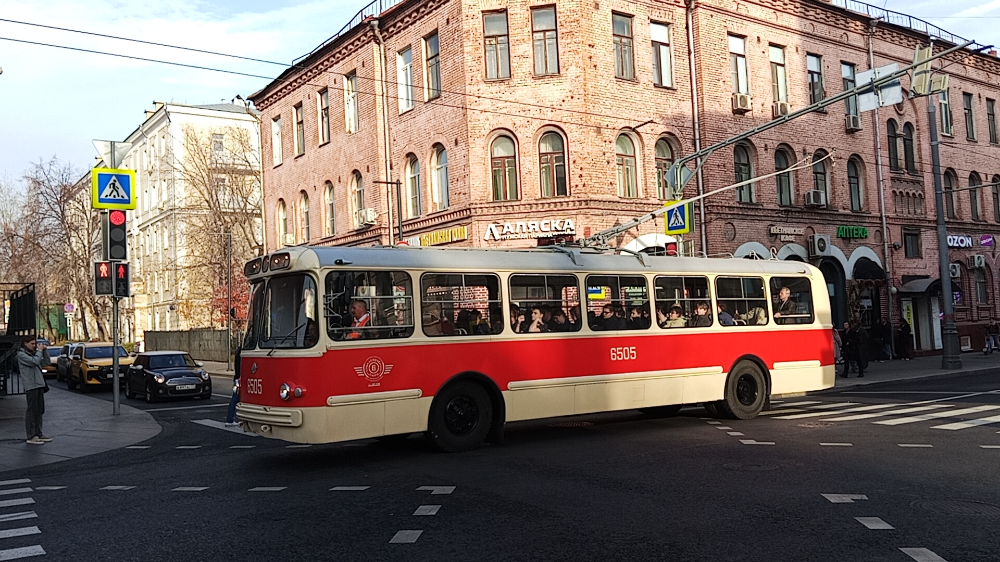

ЗиУ-5Д №6505
ЗиУ-5Д №6505 — уникальный музейный экспонат Музея Транспорта Москвы. Это последний троллейбус данной модели, который эксплуатировался в Москве. Машина была восстановлена и возвращена на улицы города спустя 30 лет после окончания службы.
В 2026 году троллейбус прошёл обкатку по трассе маршрута «Т» и был подготовлен к буксировке на площадку «Новокосино».
Общая информация
| Параметр | Значение |
|---|---|
| Город | Москва 🇷🇺 |
| Депо/Парк | Музей транспорта Москвы |
| Модель | ЗиУ-5Д |
| Построен | 03.1970 |
| Заводской № | 9859 |
| Текущее состояние | Эксплуатируется |
| Назначение | Музейный |
Историческая справка
Поступил в 6-й троллейбусный парк. В период с 1994 по 1999 год не эксплуатировался. После реставрации на заводе им. Королёва стал музейным экспонатом.
Хронология событий
Поступление в Музей
Троллейбус передан в Музей Транспорта Москвы.
Завершение реставрации
Директор Музея Транспорта Москвы Оксана Бондаренко у троллейбуса ЗИУ-5Д 1970-х годов, реставрацию которого завершил Музей Транспорта Москвы. Экспонат стал последним троллейбусом данной модели, эксплуатируемой в Москве.
Возвращение в Москву
Направляется домой в Москву после прохождения ТО на территории МУП «Химкиэлектротранс».
Первая обкатка по маршруту «Т»
После более трёх лет ожидания музейный троллейбус ЗиУ-5Д вышел на первую обкатку по трассе маршрута Т.
Подготовка к буксировке
Вышел на маршрут «Т» для трёх экскурсий. После чего троллейбус был подготовлен к буксировке на площадку «Новокосино».
Фотогалерея

В ожидании экскурсии рядом с музеем.

Внутреннее убранство троллейбуса.

Троллейбус на экскурсии на музейном маршруте.
Нажмите на фото для увеличения
«Возвращение ЗиУ-5Д на улицы Москвы — это важное событие для всех, кто интересуется историей городского транспорта. Машина не только сохранилась, но и продолжает радовать пассажиров на музейных маршрутах».